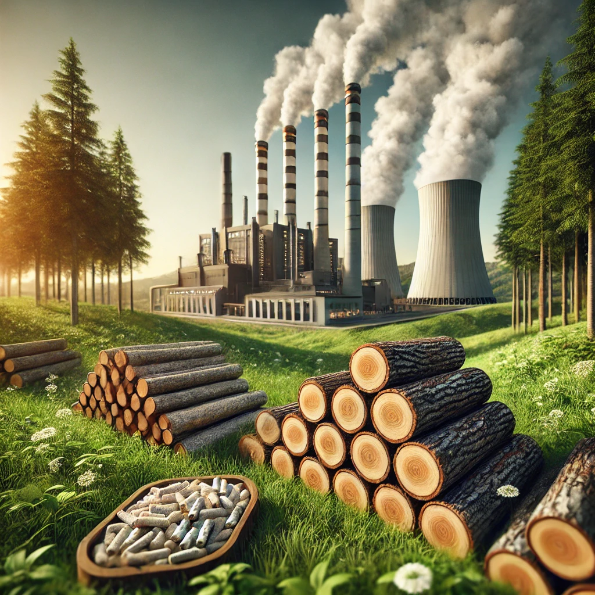

La energía de biomasa es la energía que se obtiene de la materia orgánica de seres vivos, como árboles, residuos agrícolas, excrementos de animales, entre otros. También se le conoce como bioenergía. La biomasa es una fuente de energía renovable y limpia que puede ser utilizada para producir electricidad, calor, combustibles líquidos o gaseosos. Ventajas de la biomasa Es una alternativa respetuosa con el medioambiente en comparación con los combustibles fósiles. Contribuye a la limpieza de los bosques. Impulsa el desarrollo rural. Produce electricidad de manera sostenible. Puede generar energía en todo momento, a diferencia de otras fuentes renovables. Cómo se produce la biomasa La biomasa se forma a partir de la energía solar mediante un proceso denominado fotosíntesis. La biomasa se puede quemar para producir electricidad renovable. La biomasa se puede convertir en biocombustibles como el bioetanol, metanol y biodiésel. Ejemplos de biomasa Madera Estiércol Desechos y residuos orgánicos Aguas residuales animales y los efluentes civiles e industriales Aceites vegetales Biogás
